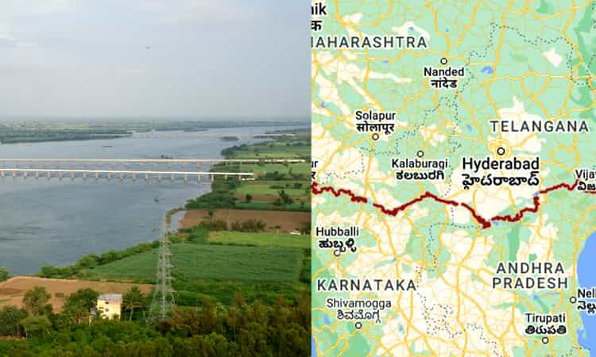
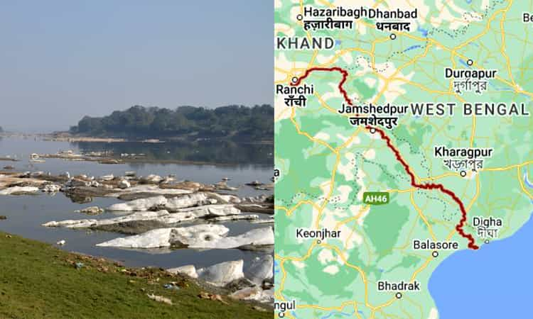

Ever since the ancient ages, people have been worshipping nature in all its forms. Rivers in India are the life-giving source where they are utilised for various daily life activities as well as for agricultural purposes. The oldest civilizations in India have flourished around rivers. Home of the great Himalayas, India also houses some of the longest rivers in the world. Origination in the mighty and majestic ranges of the Himalayan peaks, spanning across Pakistan and India, these rivers gush down through the subcontinent reviving and giving life.
Check out these top 30 Longest River in India:
- Indus River (3,180 km)
- Brahmaputra River (2,900 km)
- Ganga River (2,510 km)
- Godavari River (1,465 km)
- Krishna River (1,400 km)
- Yamuna River (1,376 km)
- Narmada River (1,312 km)
- Mahanadi River (900 km)
- Bhima River (861 km)
- Kaveri River (805 km)
- Brahmani River (799 km)
- Sone River (784 km)
- Tapi River (724 km)
- Manjira River (724 km)
- Penna River (597 km)
- Damodar River (592 km)
- Mahi River (583 km)
- Tungabhadra River (531 km)
- Ponnaiyar River (500 km)
- Subarnarekha River (474 km)
- Ken River (427 km)
- Sabarmati River (371 km)
- Sarayu River (350 km)
- Palar River (348 km)
- Malaprabha River (304 km)
- Ghataprabha River (283 km)
- Kabini River (240 km)
- Arkavathi River (190 km)
- Kali River (184 km)
- Bhadra River (147 km)
1. Indus River (3,180 km)
Covering a length of 3,180 kms and also referred to as the Indus, the river finds its origin in the mountain springs of Mount Kailash in western Tibet. It travels through the disputed region of Kashmir then goes on to bend sharply to the left near the Nanga Parbat massif, crossing Pakistan and finally emptying in the Arabian Sea. With a drainage area of 1,120,000 sq. km and an estimated annual flow of 243 sq. km this river is also famous for being one of the top 50 largest rivers in the world. The left bank tributary of Sindhu in Ladakh is the Zanskar River with subsequent river tributaries being Shyok, Gilgit, Kabul, Gomal and Kullam Rivers.
- Length: 3,180 km
- Basin area:165 million km²
- Discharge: 6,600 m³/s
- Sources: Tibetan Plateau, Senge Zangbu, Gar River
- Mouths: Arabian Sea, Rann of Kutch, Nal Sarovar Bird Sanctuary
- Bridges: Raikot Bridge, Kohala Bridge, Lansdowne Bridge, Attock Bridge, Ayub Bridge Sukkur
- Cities: Karachi, Jamshoro, Gilgit, Attock, Thatta, Peshawar, Kot Mithan, Rawalpindi
2. Brahmaputra River (2,900 km)
Finding its origin point at the Mansarovar lake region in Mount Kailash, Brahmaputra River also forms a transboundary of Tibet, India and Bangladesh. It has earned the spot for being the 15th longest river in the world with the 9th largest discharge area. After originating from the northern side of the Tibetan Himalayas, the river flows through the Southern Tibetan region and goes on to break through the Indian Himalayas and into Arunachal Pradesh. The entire length of the river system of Brahmaputra is about 2,900 km long where its upper course is lesser known and the lower reaches of the river is extremely holy for the Hindus.
- Length: 2,900 km
- Discharge: 19,300 m³/s
- Source: Himalayas
- Bridges: Bogibeel Bridge, Dhola Sadiya Bridge, Naranarayan Setu
- Mouths: Ganges, Bay of Bengal
- Cities: Guwahati
- Islands: Majuli, Peacock Island
3. Ganga River (2,510 km)
Ganga, or lovingly referred to as Ganga Maa, is one of the holiest and liberating rivers in India. Rising in the Western Himalayan region of Uttarakhand, the river flows for a distance of 2,704 kms and finally empties into the Bay of Bengal at the Sundarbans marshlands. After rising from its glacial home of Gaumukh Glacier, the river rushes its way through the Gangetic plains where it is highly utilised for personal use while also being worshipped anywhere it goes. Did you know that the Ganga – Brahmaputra Meghna system is the world’s 3rd largest river discharge. The primary stem of the river gets its name at Devprayag where the Mandakini River and Alaknanda River meet up, forming the confluence point and flowing its way through India.
- Length: 2,510 km
- Basin area:32 million km²
- Discharge: 12,020 m³/s
- Mouth: Ganges Delta
- Sources: Gangotri Glacier, Nanda Devi, Satopanth Glacier, Kedarnath, Nanda Kot, Trisul, Kamet
- Bridges: Mahatma Gandhi Setu, Vidyasagar Setu, MORE
- Cities: Varanasi, Haridwar, Prayagraj, Patna, Kolkata, Kanpur, Ghazipur
4. Godavari River (1,465 km)
After Ganges, Godavari River occupies the space for being the 2nd largest drainage basin in India. The river covers a massive area of 10% across the subcontinent, with its source at Trimbakeshwar in Nashik, Maharashtra. It flows through a length of 1,465 kms providing water to the states of Maharashtra, Telangana, Andhra Pradesh, Chhattisgarh and Odisha, before meeting the Bay of Bengal. For its importance, Godavari has also been termed as the Ganges of the south or Dakshin Ganga. The Godavari River has a coverage area of over 300,000 sq. km. which is equivalent to the overall area of the United Kingdom and the Republic of Ireland put together.
- Length: 1,465 km
- Discharge: 3,505 m³/s
- Basin area: 312,812 km²
- Mouth: Bay of Bengal
- Country: India
- Bridges: Godavari Bridge, The Havelock Bridge, Godavari Arch Bridge
- Cities: Rajamahendravaram
5. Krishna River (1,400 km)

The Deccan Plateau is home to the holy Krishna River. It is also known for being the 4th largest river in terms of water inflow and the size of the river basin area. Also known as Krishna Devi, this 1,600 kms long river is a major and one of the main sources of agricultural irrigation in states of Maharashtra, Karnataka, Telangana and Andhra Pradesh. Originating in the Western Ghats of Mahabaleshwar, on an approximate elevation of 4,300 feet above sea level, the river makes its way to the Bay of Bengal Ocean while also branching out into 13 different tributaries.
- Length: 1,400 km
- Discharge: 1,642 m³/s
- Basin area: 258,948 km²
- Source: Mahabaleshwar
- Mouths: Bay of Bengal, Hamsaladeevi
- Cities: Vijayawada, Sangli
- Islands: Bhavani Island
6. Yamuna River (1,376 km)
Yamuna River, which is also pronounced as Jamuna in some regions is famous as the 2nd largest tributary of Ganga River as calculated by discharge area. Yamuna’s point of origin is located on an elevation of 14,800 feet at the Champasar Glacier which is located beyond the temple of Yamunotri. From its origin to drainage, the river travels over a distance of 1,376 kms before merging with the Ganges at the Triveni Sangam in Allahabad. Just like Ganga, Yamuna River is worshipped everywhere it goes in the form of goddess Yamuna, the daughter of the sun god, and sister of the god of death, Yam.
- Length: 1,376 km
- Basin area: 366,223 km²
- Mean depth: 3 m
- Sources: Yamunotri, Champasar Glacier
- Cities: Yamuna Nagar, Prayagraj, Agra, Mathura, Noida, Kalpi, Hamirpur, Etawah, Baghpat, Firozabad
- Bridges: Old Naini Bridge
- Mouths: Ganges, Triveni Sangam
7. Narmada River (1,312 km)
Occupying the 5th place for being the longest river system in India, Narmada River is also known for being the largest flowing river in India. The river also makes its way through Gujarat and has been named as the lifeline of Madhya Pradesh and Gujarat. Narmada River originates from the Amarkantak plateau in the Anuppur district of Madhya Pradesh. As it flows through it forms a natural boundary between North India and South India. It goes on for a length of 1,312 kms before draining out in the Arabian Sea through the Gulf of Khambhat.
- Length: 1,312 km
- Basin area: 98,796 km²
- Discharge: 1,216 m³/s
- Source: Amarkantak
- Mouths: Arabian Sea, Gulf of Khambhat
- Bridges: Naramada Bridge
- Cities: Jabalpur, Vadodara
8. Mahanadi River (900 km)
Occupying the position of being one of the major river systems in the east-central region of the subcontinent, Mahanadi river travels over a distance of about 900 kms before draining out at the Bay of Bengal. Famous for the Hirakud Dam, the river is a life-giving source for the people residing in the states of Chhattisgarh and Odisha. The term Mahanadi is derived from the Sanskrit terms where Maha means great and Nadi means river. Being seasonal in nature for most parts, the exact origin location of the river is impossible to pinpoint but it can precisely be located at the Eastern Ghats.
- Length: 900 km
- Basin area: 141,600 km²
- Discharge: 2,119 m³/s
- Source: Sihawa
- Mouth: False Point
- Bridges: Netaji Subash Chandra Bose Setu
- Cities: Cuttack, Sambalpur, Sonepur, Baudhgarh, Birmaharajpur, Subalaya
9. Bhima River (861 km)
Also known as the Chandrabhaga River, Bhima is a major river system in the western and central Indian regions. It runs for a distance of over 860 kms through the states of Maharashtra, Telangana and Karnataka before entering the Krishna river system. After covering the first 65 kms through a narrow valley and crossing the rugged terrain, the banks open up to make way for some of the most fertile agricultural lands which are also densely populated. The river is termed as chandrabhaga as it resembles the shape of the moon.
- Length: 861 km
- Basin area: 70,614 km²
- Mouth: Krishna River
- Country: India
- Sources: Bhimashankar Temple, Bhimashankar
- Bridges: Bhima River Bridge
- Cities: Daund
10. Kaveri River (805 km)
Also known as Kaviri in ancient Tamil literature, Kaveri is not only one of the longest rivers in India but it is also one of the major flowing rivers in the states of Karnataka and Tamil Nadu. The Kaveri River rises at the Talakaveri in the Brahmagiri range of the Western Ghats in the Kodagu district of Karnataka. The river flows on for a length of about 800 kms before exiting into the Bay of Bengal. After the Godavari and Krishna rivers, Kaveri is the 3rd longest river in South India. The people of south India worship the Kaveri River in the form of Kaveriamma.
- Length: 805 km
- Basin area: 72,000 km²
- Discharge: 677 m³/s
- Source: Tala Kaveri
- Mouth: Bay of Bengal
- Country: India
- Cities: Tala Kaveri, Tiruchirappalli, Talakadu, Thanjavur, More
11. Brahmani River (799 km)
Running for a distance of 480 kms, the Brahmani River is the 2nd longest river in Odisha, ranking after Mahanadi. Brahmani is also a major seasonal river in the eastern state of Odisha which is formed by the confluence of the Shankh and the South Koel Rivers. After being formed it goes on to flow through various districts such as Deoghar, Sundargarh, Cuttack, Jajpur etc. prior to emptying in the Bay of Bengal, the Brahmani River forms a massive delta region which has also earned it the spot for being the 2nd widest river in Odisha.
- Length: 799 km
- Discharge: 678 m³/s
- Mouth: Bay of Bengal
- Country: India
- Sources: Sankh River, South Koel River
- Bridges: Panposh Bridge, Brahmani Bridge, Jaraka
- Cities: Rourkela
12. Sone River (784 km)
Located in the central region of the subcontinent the Sone River is a perennial river that originates at the Amarkantak hills of Chattisgarh. The river flows on for 784 kms before joining the Ganges River near Patna in the state of Bihar. Sone is also the 2nd largest tributary in India just after Yamuna. The Sone originates at Pendra in Chhattisgarh and heads on to the state of Madhya Pradesh where it encounters the Kaimur range. In Bihar Son River forms a sort of unsaid boundary between the Bhojpuri-speaking and Magahi-speaking regions of the state.
- Length: 784 km
- Source: Amarkantak
- Mouth: Ganges
- Country: India
- Cities: Sidhi, Dehri, Daudnagar, Chopan, Japla, Arwal, Koilwar
- Region: Baghelkhand, Palamu, Magadha, Shahbad
- Bridges: Koilwar Bridge
13. Tapi River (724 km)
Occupying the central region of India, Tapi River is located towards the south of the Narmada river and it flows westwards before finally draining into the Arabian Sea. The river is named after goddess Tapati who is the daughter of Surya. The river travels for 724 kms and makes its way through the states of Maharashtra, Gujarat and Madhya Pradesh. Finding its origin at the Multai in Madhya Pradesh, Tapi River is the 2nd largest west-flowing river in India. The river has 14 major tributaries and drains itself out in the gulf of Khambhat.
- Length: 724 km
- Source: Satpura Range
- Country: India
- Basin size: 62,225 square kilometres (24,025 sq mi)
- Cities: Surat, Burhanpur, Nashik, Betul, Jalgaon, Bhusawal, MORE
- Mouths: Arabian Sea, Gulf of Khambhat
14. Manjira River (724 km)
Originating at the Balaghat range of hills near Ahmednagar on an elevation of 2,700 feet, Manjira River is one of the major tributaries of the holy Godavari River. The river makes its way through the states of Karnataka, Maharashtra and Telangana. It flows on for a length of 724 kms and empties itself in the holy river of Godavari. With a total catchment area of over 30,000 sq. km. Manjira River cuts across the Latur districts and goes on to the Bidar district in Karnataka and finally enters Telangana.
- Length: 724 km
- Basin area: 30,844 km²
- Mouth: Godavari River
- Country: India
15. Penna River (597 km)
Often referred to as the Penna or the Pennai River, this river is one of the most important and major rivers of South India. Pennar is considered as one of the most unique rivers in the world with its origin point being at the Nandi hills. It flows down in two different streams, one in the northern direction while the other one being in the southern direction. The river runs for 597 kms through the states of Karnataka and Andhra Pradesh before draining out at the Bay of Bengal. The Penna River basin occupies the rain shadow region of the Eastern Ghats.
- Length: 597 km
- Basin area: 55,213 km²
- Source: Nandi Hills
- Mouth: Bay of Bengal
- Country: India
- Mouth elevation: 0
- Cities: Nellore
16. Damodar River (592 km)
Flowing across the Indian states of West Bengal and Jharkhand, through the mineral-rich valleys and landscapes, Damodar River is one of the major water sources in these states. During the earlier days, the river was known as the sorrow of Bengal since the state used to be ravaged by devastating floods. Spread up to a length of over 592 kms, the term Damodar translates into ‘rope around the belly’. Damodar is also considered to be another name for Lord Krishna that was given to him by his mother Yashoda.
- Length: 592 km
- Basin area: 23,371 km²
- Source: Chota Nagpur Plateau
- Country: India
- Mouths: Hooghly River, Rupnarayan River
- Cities: Bokaro Steel City, Durgapur, Burdwan, Asansol, Howrah
17. Mahi River (583 km)
Mahi is a major river in the western part of India that rises in Madhya Pradesh. After its origin it covers a distance of 580 kms by covering Rajasthan and Gujarat before finally ending its journey in the Arabian Sea. It is one of the very few west-flowing rivers in India alongside other rivers such as Loni River, Sabarmati River, Tapi River and Narmada River. Rising in the western Vindhya ranges the silt that is brought down by the river along with it has also contributed to the Shallowing of the gulf of Khambhat. Worshipped by the locals, the river crosses the tropic of cancer twice.
- Length: 583 km
- Basin area:84 km²
- Source: Vindhya Range
- Country: India
- Mouths: Arabian Sea, Gulf of Khambhat
- Bridges: Mahi River Bridge
- Cities: Banswara, Vadodara
18. Tungabhadra River (531 km)
This 560 kms long river starts and flows through the beautiful south Indian state of Karnataka for most of its course, then goes on to flow along the border between Telangana, Andhra Pradesh and finally ending its journey by joining the holy Krishna river. The river is named after the 2 streams that meet to form the Tungabhadra. This confluence takes place near Shimoga and it has a very rich historical and mythological story backing it up as well. The two rivers are individually made up of about 100 tributaries, streams, creeks and rivulets.
- Length: 531 km
- Discharge: 650 m³/s
- Basin area: 71,417 km²
- Mouth: Krishna River
- Country: India
- Sources: Tunga, Bhadra
- Cities: Hampi, Mantralayam, Hosapete, Kurnool
19. Ponnaiyar River (500 km)

Ponnaiyar River is famous for being the 2nd longest river in Tamil Nadu that covers a length of about 497 kms, just after Kaveri River. The banks of this river are home to some of the major and extremely important industrial settlements. Originating at the Nandi hills of Karnataka and flowing through Tamil Nadu, the river finally ends its journey in the Bay of Bengal. The river remains dry for most parts of the year and only being fed by the monsoon makes it a seasonal river. According to the sand build studies of the river bed, it was once a perennial and a very rich water source in the past.
- Length: 500 km
- Source: Nandi Hills
- Mouth: Bay of Bengal
- Cities: Chikballapur; Bangalore, Hosur, Krishnagiri, kaveripattinam; Tiruvannamalai,, Cuddalore
- Country: India
- Mouth elevation: 0
20. Subarnarekha River (474 km)

Making its way through the states of Jharkhand, West Bengal and Odisha, the Subarnarekha River originates near the piska region in Ranchi, which is the capital of Jharkhand. Traversing its way through a length of 392 kms, the river covers Seraikela Kharsawan and east Singhbhum districts in the state. On its way the river also makes several stunning and beautiful waterfalls that will leave you in awe of the beauty of nature. The river has been a major source of livelihood and water source for the tribal communities that have been residing along the river through centuries.
- Length: 474 km
- Source: Chota Nagpur Plateau
- Mouth: Bay of Bengal
- Country: India
- Bridges: Jangal Kanya Setu
- Cities: Ghatshila, Jamshedpur, Ranchi
21. Ken River (427 km)
The Ken river is one of the most important and major rivers of the Bundelkhand region in central India. It flows on through the states of Madhya Pradesh and Uttar Pradesh covering a distance of about 550 kms before entering its main river tributary of Yamuna River. River Ken finds its origin point near the village of Ahirgawan in the district of Katni. Crossing through the Bijawar Panna hills the Ken River goes on to cut through for a distance of 60 kms. The Ken valley separates the Rewa plateau from the Satna Plateau.
- Length: 427 km
- Source: Ahirgawan
- Mouth: Yamuna River
- Country: India
22. Sabarmati River (371 km)
Sabarmati River is one of the major west-flowing rivers in India whose origin points can be located in the Aravalli ranges of the district of Udaipur. It covers a total length of 371 kms before ending at the Gulf of Khambhat in the Arabian Sea. The Sabarmati River basin is about 21,600 sq. km. and occupies a semi-arid region constraining rocky uplands, alluvial plains and lower estuarine zone. The Sabarmati is a seasonal river whose flows are completely dominated by the monsoon season.
- Length: 371 km
- Source: Dhebar Lake
- Mouth: Gulf of Khambhat
- Country: India
- Bridges: Ellish Bridge, Sardar Bridge
- Cities: Ahmedabad
23. Sarayu River (350 km)
Originating at a ridge south of Nanda Kot Mountains in the district of Bageshwar in Devbhoomi Uttarakhand, the Sarayu River covers a total length of 350 kms. The river goes on to flow through Kapkot, Bageshwar and Seraghat towns before finally discharging into the Sharda River at Pancheshwar along the India – Nepal border. The river is not only important for its life-giving properties but it has also found its mention in various ancient Hindu epics such as Ramayana. This is because the river flows through the holy city of Ayodhya – Lord Rama’s birthplace.
- Length: 350 km
- Mouth: Ganges
- Country: India
- Sources: Ghaghara River, Sarda River
- Cities: Bahraich
24. Palar River (348 km)

Rising on the Nandi hills, Palar River is one of the most important rivers of South India. Upon originating from the Chikkaballapura district in Karnataka, the river confluences into the Bay of Bengal about 100 kms south of Chennai. The Palar River also turns into an underground river for some distance and then finally emerges near Bethamangala town. The major tributaries of the river are the Ponnai and Cheyyar River. The river flow of the Palar is irregular with equally considerable variations from year to year.
- Length: 348 km
- Source: Nandi Hills
- Mouth: Bay of Bengal
- Country: India
- Bridges: Palar Bridge, Palar River Bridge, Palar River Bridge Palayaseevaram
- Cities: Vellore, Kanchipuram
25. Malaprabha River (304 km)
The Malaprabha River is an important tributary of the holy Krishna River and goes on to flow through the state of Karnataka. Rising in the lush Western Ghats on an elevation of over 2,600 feet above sea level in the district of Belgaum, the river joins with Krishna River at Bagalkot district. Marking the origin of the river is an ancient temple dedicated to Shree Mauli Devi. This temple has turned into one of the most important places of pilgrimage where the devotees are believed to be showered with well-being.
- Length: 304 km
- Source: Western Ghats
- Mouth: Krishna River
- Country: India
- Region: Belgaum
26. Ghataprabha River (283 km)
Ghataprabha River is named after the Ghataprabha village and is an important right bank tributary of the holy Krishna River. It flows eastward for a distance of 283 kms before ending its journey with the Krishna River at the Chicksangam. The river crosses through the state of Maharashtra and Karnataka giving life and water sources for everywhere it crosses. The river can be easily crossed over by the suspension bridge near the Gokak waterfalls that was built during the 1800s and early 1900s.
- Length: 283 km
- Source: Western Ghats
- Mouth: Krishna River
- Country: India
27. Kabini River (240 km)
One of the major tributaries of Kaveri Rivers is the Kabini River that originates near the district of Kozhikode in Kerala, very close to the confluence of the Panamaram River and the Mananthavady River. After flowing through the Wayanad district, Mysore district, the Kabini River finally joins the Kaveri River. The backwaters of the Kabini reservoir are known for being extremely rich in biodiversity and hold a very important ecosystem for a variety of wildlife like birds, fish, animals and plants.
- Length: 240 km
- Source: Panamaram
- Country: India
- Cities: Mananthavady, Kuttiady, Korome, Payyampally, Valad
- Mouths: Tirumakudalu Narasipura, Bay of Bengal
28. Arkavathi River (190 km)
The Arkavathi River is an important mountain river in Karnataka that finds its origins in the Nandi hills of Chikkaballapura district. This tributary of Kaveri River is 190 kms long, and drains into the Chikkanayakanahalli Lake near Kanivenarayanapura. The river has historically served as a source of drinking water in Bangalore and other surrounding regions. Although the river has become polluted over the years, its rejuvenation and restoration efforts are being put in place in order to restore it back to its previous glory.
- Length: 190 km
- Source: Nandi Hills
- Country: India
- Cities: Chikkaballapur, Bengaluru Rural, Bengaluru Urban, Ramanagara
- Mouth: Kaveri River
29. Kali River (184 km)
Kali River or the Kaali Nadi makes its way through the Uttara Kannada region of Karnataka. The river rises close to the Kushavali which is a small village in the Uttara Kannada district. Covering a distance of about 265 kms the river is the lifeline for about 400,000 people living on its banks. There are numerous dams built across this river in order to produce hydroelectric power. After covering its journey, Kali River joins the Arabian Sea. NH 17 built on the river connects Karnataka to Goa.
- Length: 184 km
- Source: Diggi
- Mouth: Arabian Sea
- Country: India
- Uttar Kannada: Karwar
- Bridges: Kali River Bridge
30. Bhadra River (147 km)
Passing along the South Indian state of Karnataka, the Bhadra River originates at Gangamoola near the Western Ghats range. The entire length of the river crosses the southern plateau of Deccan plateau which is later on joined by its subsequent tributaries. The Bhadra River meets the Tunga River at Koodil and this combined river continues on eastwards before emptying itself into the Bay of Bengal.
- Length: 147 km
- Source: Gangamoola, Chikmagalur district, Karnataka
- Country: India
- Mouth: Tungabhadra River, Koodli, Karnataka
Frequently Asked Questions (FAQs)
Q. How Many Rivers Are There In India?
Ans. There are over 400 different rivers in India with 8 major river systems.
Q. Which River Is Called The Indian Nile?
Ans. The Indus River is often referred to as the Indian Nile.
Q. Which Is The Most Important River In India?
Ans. Ganga is the most important river in India.
Q. Which Is The Shortest River In India?
Ans. Arvari River is the shortest river in India.
Q. Which Is The Deepest River In India?
Ans. Brahmaputra River is the deepest in India.

 Call
Call WhatsApp
WhatsApp Enquiry
Enquiry